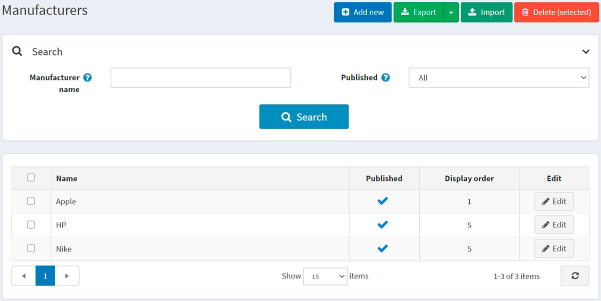
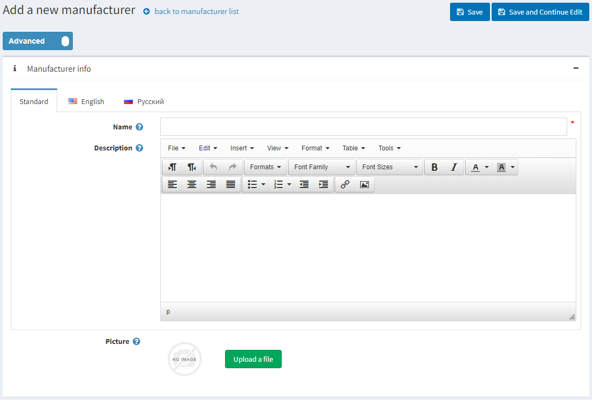
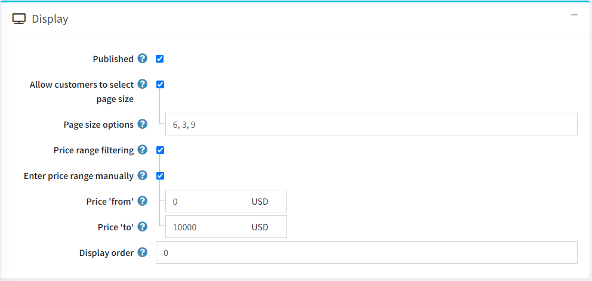
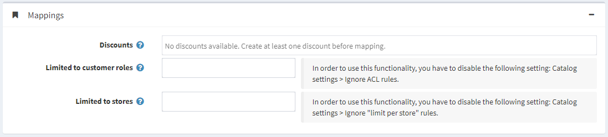
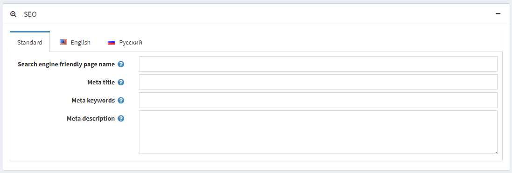
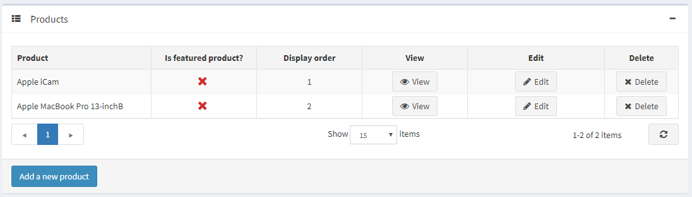

製造商
若要管理製造商，請前往 目錄 → 製造商。

您可以在「搜尋」面板中透過輸入 製造商名稱 或其部分名稱、依據 已發佈 屬性，或在特定 商店 的所有製造商中進行搜尋（若已啟用多個商店）。
Note
若要從清單中移除製造商，請選取要刪除的項目，然後點擊 刪除 (已選取) 按鈕。 您可以點擊 匯出 按鈕將製造商匯出至外部檔案以進行備份。點擊 匯出 按鈕後，您將看到下拉式選單，讓您選擇 匯出至 XML 或 匯出至 Excel。
新增製造商
若要新增製造商，請點擊頁面上方的 Add new 按鈕。此時會顯示 Add a new manufacturer（新增製造商）視窗。

此頁面提供兩種模式：進階 (advanced) 與 基本 (basic)。切換至基本模式僅會顯示主要欄位，或使用進階模式以顯示所有可用的欄位。
製造商資訊
在 製造商資訊 面板中，請定義以下詳細資料：
- 名稱 — 這是目錄中顯示的製造商名稱。
- 描述 — 製造商的描述。請使用編輯器來設定版面配置與字型。
- 圖片 — 代表製造商的圖片。請從您的裝置上傳圖片。
顯示

在 顯示 面板中，定義以下詳細資訊：
勾選 已發布 核取方塊，以允許該製造商在前台網站顯示。
勾選 允許顧客選擇頁面大小 核取方塊，以允許顧客自行選擇頁面大小，即製造商詳細資料頁面上顯示的商品數量。顧客可以從商店負責人在 頁面大小選項 欄位中輸入的列表裡選擇頁面大小。
- 若已勾選上述核取方塊，則會顯示 頁面大小選項。請輸入以逗號分隔的頁面大小選項列表（例如：10, 5, 15, 20）。若未進行選擇，第一個選項即為預設的頁面大小。
- 若未勾選 允許顧客選擇頁面大小 核取方塊，則會顯示 頁面大小 選項。此設定用於決定該製造商商品的頁面大小，例如每頁顯示 '4' 個商品。
Tip
例如，當您為某個製造商新增七個商品並將頁面大小設為三時，該製造商的詳細資料頁面在前台網站上將會顯示每頁三個商品，且總頁數會是三頁。
若您想啟用價格範圍篩選功能，請勾選 價格範圍篩選 核取方塊。
- 若您希望手動輸入價格範圍，請勾選 手動輸入價格範圍 核取方塊。
- 若啟用了上述設定，請輸入 價格「從」。
- 以及 價格「至」。
- 若您希望手動輸入價格範圍，請勾選 手動輸入價格範圍 核取方塊。
顯示順序 — 製造商的顯示順序編號。此顯示數字用於在前台網站上排序製造商（遞增排序）。顯示順序為 1 的製造商將會置於列表的最上方。
若您已在 系統 → 範本 頁面中安裝了自訂製造商範本，則會顯示 製造商範本 欄位。此範本決定了該製造商（及其商品）的顯示方式。
對應

在 對應 (Mappings) 面板中，定義下列詳細資訊：
折扣 (Discounts) — 選擇與此製造商關聯的折扣。您可以在 促銷 → 折扣 頁面建立折扣。請參閱 折扣 章節以了解更多關於折扣的資訊。
Note
請注意，這裡僅會顯示類型為 指派給製造商 (assigned to manufacturers) 的折扣。當折扣對應到該製造商後，它們將會套用到該製造商旗下的所有商品。
Note
若您想要使用折扣，請確保 設定 → 設定 → 目錄設定 → 效能 面板中的 忽略折扣 (全站適用) (Ignore discounts (sitewide)) 設定已停用。
在 限制給顧客角色 (Limited to customer roles) 欄位中，選擇能夠在目錄中看到該製造商的顧客角色。如果不需要此選項，請保持欄位空白，如此一來所有人都能看見該製造商。
Note
若要使用此功能，您必須停用下列設定：設定 → 目錄設定 → 忽略 ACL 規則 (全站適用) (Ignore ACL rules (sitewide))。請參閱 存取控制清單 (ACL) 的相關說明。
如果製造商的商品僅在特定商店販售，請在 限制給商店 (Limited to stores) 欄位中選擇對應的商店。如果不需要此功能，請保持欄位空白。
Note
若要使用此功能，您必須停用下列設定：目錄設定 → 忽略「各商店限制」規則 (全站適用) (Ignore "limit per store" rules (sitewide))。請參閱 多商店功能說明。
SEO

在 SEO 面板中，請定義下列詳細資訊：
搜尋引擎友善網頁名稱 (Search engine friendly page name) — 搜尋引擎所使用的頁面名稱。若您將此欄位留空，製造商頁面的 URL 將會使用製造商名稱來產生。若您輸入 custom-seo-page-name，則會使用以下自訂 URL：
http://www.yourStore.com/custom-seo-page-name。Meta 標題 (Meta title) 用於指定網頁的標題。這是一段插入在您網頁標頭中的程式碼：
<head> <title> Creating Title Tags for Search Engine Optimization & Web Usability </title> </head>Meta 關鍵字 (Meta keywords) — 製造商的 meta 關鍵字，代表該頁面最重要的主題簡潔清單。Meta 關鍵字標籤看起來像這樣：
<meta name="keywords" content="keyword, keyword, keyword phrase, etc.">Meta 描述 (Meta description) — 製造商的描述。Meta 描述標籤是網頁內容的簡要總結。Meta 描述標籤看起來像這樣：
<meta name="description" content="Brief description of the contents of your page">
點擊 儲存並繼續編輯 (Save and continue edit) 按鈕，即可繼續將商品新增至該製造商。
商品
商品 面板包含與所選製造商相關的商品列表；這些商品可以在目錄中依製造商進行篩選。商店擁有者可以為製造商新增商品。請注意，您必須先儲存製造商，才能開始新增商品。
點擊 新增商品 (Add a new product) 以尋找您想要加入此製造商的商品。您可以透過 商品名稱 (Product name)、類別 (Category)、供應商 (Vendor)、商店 (Store)、商品類型 (Product type) 以及 製造商 (Manufacturer) 進行搜尋。

選取您想要加入至該製造商的商品，然後點擊 儲存 (Save) 按鈕。該商品將會顯示在所選製造商之下。

商品加入至製造商後，您可以透過點擊商品旁邊的 編輯 (Edit) 按鈕，在 商品 表格中定義以下資訊：
- 是否為精選商品 (Is featured product)。
- 顯示順序 (Display order)。
Note
點擊 檢視 (View) 將會重新導向至 編輯商品詳細資料 頁面。
點擊 儲存 (Save)。
匯入製造商
如果您不想手動將所有製造商新增至您的目錄，可以使用匯入選項。
Note
在開始匯入之前，您應該下載 Excel 格式的匯入表格範本。為了準確且正確地匯入您的製造商資料，請務必正確命名表格中的所有欄位（名稱必須與下載的表格完全一致）。
不強制要求填寫表格中的所有欄位。系統將根據您所填寫的欄位來建立製造商。
匯入過程需要消耗大量的記憶體資源。因此，建議不要一次匯入超過 500 至 1000 筆記錄。如果您有更多的記錄，建議將其拆分為多個 Excel 檔案並分批匯入。